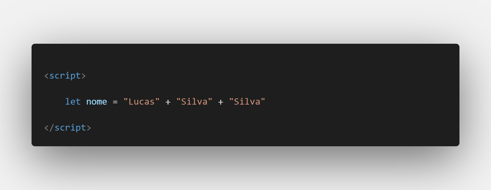
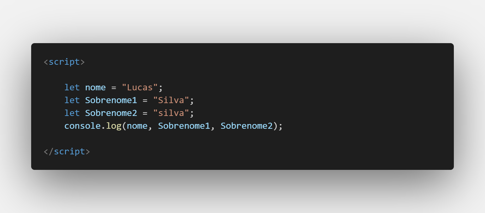
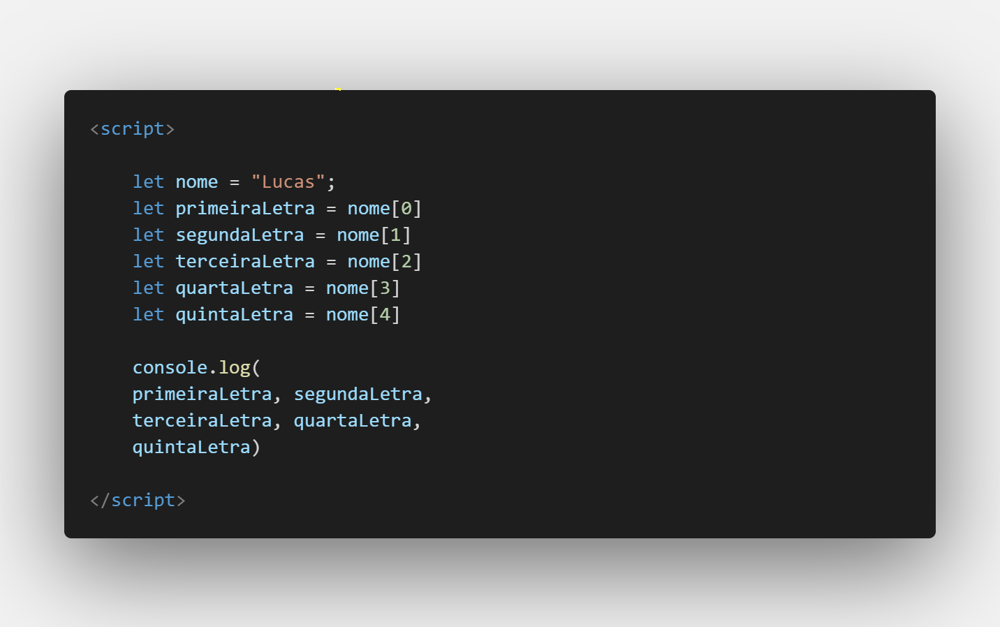
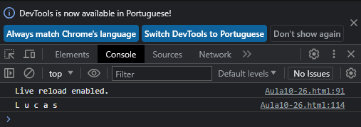
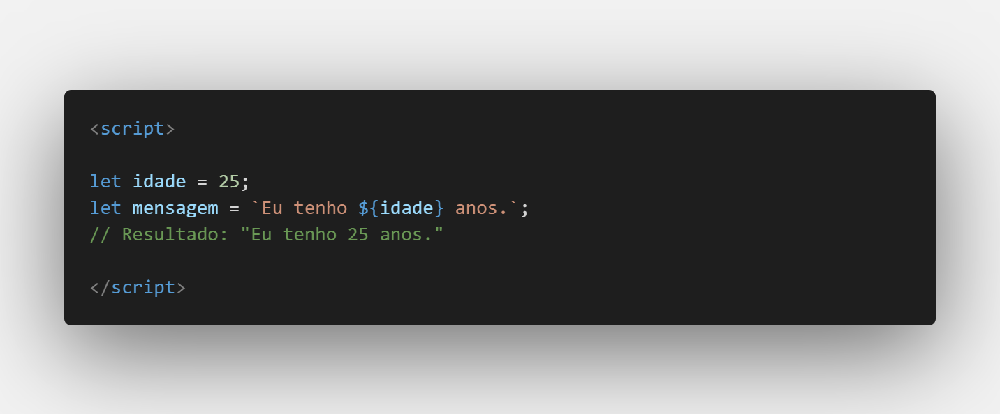
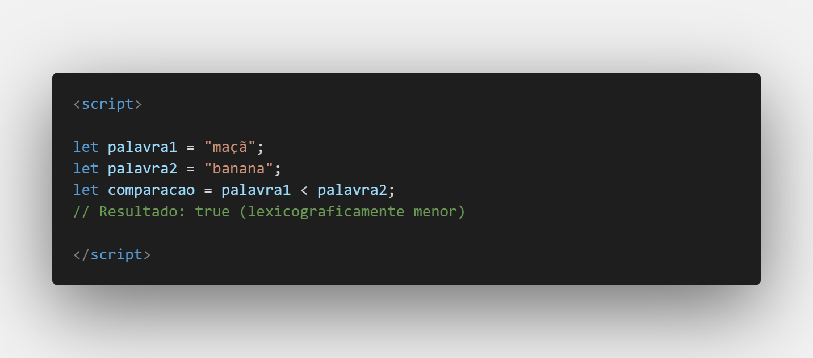

Aula 10 - Strings
O que são Strings no JavaScript:
Em JavaScript, uma string é um tipo de dado que representa uma sequência de caracteres. Essa sequência pode incluir letras, números, espaços e caracteres especiais. Strings são frequentemente usadas para armazenar e manipular texto em programas JavaScript.
Funcionamento de Strings:
Internamente, as strings são representadas como uma sequência de valores numéricos correspondentes aos códigos ASCII ou UTF-16 dos caracteres. Isso significa que cada caractere em uma string é mapeado para um número que representa sua posição na tabela de caracteres. Isso permite que o JavaScript manipule e compare strings.
Como surgiram:
A ideia de representar texto como sequências de números não é exclusiva do JavaScript; ela é usada em muitas linguagens de programação. A codificação de caracteres como ASCII e UTF-16 existe há muito tempo para permitir que os computadores armazenem e processem texto. O JavaScript adotou essa abordagem para lidar com texto e fornece métodos e funções para manipular strings de maneira eficiente.
Uso de Strings no JavaScript:
As strings são usadas para lidar com praticamente qualquer forma de entrada de texto ou exibição de saída em um programa JavaScript. Aqui estão alguns exemplos de uso:
-
Declaração de Strings:
Você pode criar uma string atribuindo texto a uma variável:

-
Concatenação:
É possível combinar (concatenar) strings usando o operador +:

-
Acessando Caracteres:
Você pode acessar caracteres individuais em uma string usando a notação de colchetes:0


-
Template Strings:
As template strings permitem criar strings interpoladas, onde expressões JavaScript podem ser incorporadas:

-
Comparação de Strings:
Você pode comparar strings usando operadores de comparação, como ===, <,>, etc. O JavaScript compara as strings com base em seus códigos de caractere.

-
Métodos de String:
Os métodos de string em JavaScript são um conjunto de funções incorporadas que permitem realizar diversas manipulações e operações em cadeias de caracteres. Cada método é projetado para executar uma tarefa específica, como localizar, extrair ou modificar partes de uma string. Quando aplicados a uma string, esses métodos utilizam algoritmos internos para examinar sua estrutura, possibilitando identificar padrões, posições ou caracteres específicos. Através do uso de argumentos ou parâmetros, esses métodos aceitam informações adicionais, como substrings a serem encontradas, caracteres para substituição, entre outros. Ao aplicar um método a uma string, o método processa a string de acordo com a tarefa designada e retorna o resultado desejado. Isso oferece aos desenvolvedores uma maneira eficaz e programática de manipular, transformar e explorar informações contidas em strings.
charAt(index):Retorna o caractere na posição especificada.
charCodeAt(index):Retorna o valor Unicode do caractere na posição especificada.
concat(str1, str2, ...):Combina duas ou mais strings.
includes(substring, fromIndex):Verifica se a string contém a substring fornecida.
endsWith(suffix, length):Verifica se a string termina com a substring fornecida.
indexOf(substring, fromIndex) e lastIndexOf(substring, fromIndex):Retorna o índice da primeira ocorrência (ou última ocorrência) de uma substring, começando a busca a partir de fromIndex.
match(regex):Retorna um array de correspondências da string com uma expressão regular.
replace(searchValue, newValue):Substitui o valor especificado por outro valor.
search(regex):Executa uma pesquisa por uma expressão regular e retorna o índice da primeira correspondência.
slice(start, end):Retorna uma parte da string, começando do índice start até end - 1.
split(separator, limit):Divide a string em um array de substrings com base no separador especificado.
startsWith(prefix, position):Verifica se a string começa com a substring fornecida.
substring(start, end):Retorna uma parte da string, começando do índice start até end - 1.
toLocaleLowerCase() e toLocaleUpperCase():Converte a string em minúsculas ou maiúsculas, respeitando as regras de localização.
toLowerCase() e toUpperCase():Converte a string em minúsculas ou maiúsculas.
trim(), trimStart() e trimEnd():Remove espaços em branco no início, no final ou em ambos os lados da string.
valueOf():Retorna o valor primitivo de uma string.